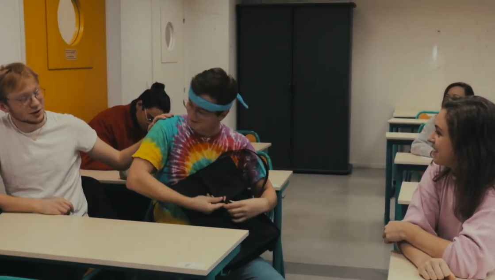

Decouvrez les projets cinématographiques que j’ai réalisé au cours de ma vie
Projets cinématographiques personnels

-Court métrage réalisé par Luna DENOUAL en novembre 2020 "TOUT ÇA POUR ÇA" dans lequel j’ai joué et écrit le scénario.
-L'histoire raconte comment un groupe d'amis vont devoir cacher au dernier membre du groupe leur accident avec un animal qui a tué la bête.
https://www.youtube.com/watch?v=KIzsHKf3vz8
Tous ces courts métrage ont été produit à l'aide de l'association de cinéma Cineko de l'université Gustave Eiffel et bien d'autres sont à venir
Projets cinématographiques scolaire
-Court métrage réalisé avec mon école de théâtre dans lequel de Delphine Guihard où j’étais acteur et scénariste
-Ce court métrage est une parodie de la série TV réaliste "Une histoire, une urgence" qui nous plonge au cœur de la vie d'une famille de vignerons, dont un des membres est admis aux urgences de l'hôpital.
https://www.youtube.com/watch?v=kvZqBIpCxg0&t
C'est avec la production des courts métrages de cette page que l'envie de devenir réalisateur m'est venu. J'ai l'envie et la passion de me perfoctionner dans la pratique cinématographique afin de vivre uniquement grâce à cela.